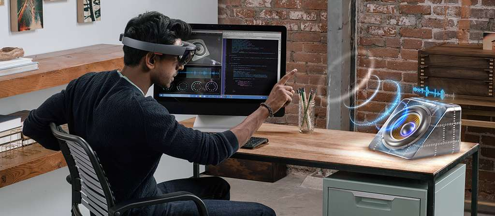

La frontière entre ces deux technologies réalité virtuelle et réalité augmentée est floue. Pourtant, si elles partagent des traits communs, elles véhiculent deux visions assez différentes et des usages spécifiques. Apparue au milieu des années 1990 la réalité virtuelle est une évolution des techniques de représentation d'un monde en trois dimensions. Mais à l'inverse d'un jeu vidéo ou d'une expérience multimédia traditionnelle, où l'utilisateur reste à distance de l'écran, la réalité virtuelle nous plonge dans l'univers en 3D, au moyen d'un casque et de capteurs de mouvements qui vont nous faire « vivre » dans cet univers. Loin des primitives expériences des années 1990, les solutions de réalité virtuelle modernes ont considérablement évolué. Les plus réputées, l'Oculus Rift, racheté par Facebook, ou le HTC Vive, réalisé en collaboration avec Valve (Steam), sont composées de trois éléments : un casque de réalité virtuelle à brancher sur l'entrée vidéo et les ports USB de son PC (de préférence haut de gamme), des capteurs de mouvement à placer dans la pièce pour le détecter et des contrôleurs qui vont permettre à l'utilisateur d'interagir dans l'espace avec ses mains. Le casque diffuse des images en 3D stéréoscopique via un écran et des lentilles qui les placent au plus près des yeux. L'impression d'être dans l'espace virtuel peut être saisissante. D'autres solutions plus simples existent, comme celles basées sur un smartphone (Samsung Gear VR, Google Daydream...) ou les casques autonomes tels que l'Oculus Go. Ces casques « light » proposent des expériences plus simples, essentiellement portées sur les mouvements de la tête (vidéo à 360°, visite virtuelle...) ou assistés d'un contrôleur (manette ou télécommande). Dans tous les cas, l'image plaquée devant les yeux de l'utilisateur l'isole complètement de la réalité, ce qui peut d'ailleurs poser des problèmes de vertiges, de claustrophobie ou des chocs involontaires avec les objets de la pièce. La réalité virtuelle exige en effet de pousser les meubles !
La réalité augmentée, elle, enrichit le réel avec des éléments virtuels. On peut la voir comme une lentille à travers laquelle on regarde une version « augmentée » de la réalité, avec des informations en surimpression, jusqu'à des objets 3D imaginaires qui viennent s'intégrer dans une pièce. On peut considérer le simple affichage tête haute d'une voiture comme une forme de réalité augmentée. L'expérience des Google Glass, qui diffusaient des informations visibles dans un coin de l'œil, était un autre exemple : afficher une carte Google Maps et des indications sur la direction à prendre tout en marchant, sans avoir à regarder son smartphone. Des techniques plus avancées de réalité augmentée sont déployées par Google et Apple sur leurs OS mobiles. Les API AR Core (côté Android) et AR Kit (version iOS) transforment les smartphones en prisme de réalité augmentée, même si en pratique, ça n'en est pas vraiment : on regarde toujours un écran qui diffuse une capture vidéo, enrichie, du réel. Toujours est-il que la réalité augmentée sur smartphone continue à s'enrichir de nouvelles apps (jeux sur table, outils de mesure ou d'astronomie...) et affine ses possibilités. iOS 12 introduit par exemple la notion d'expériences persistantes (que l'on peut quitter et reprendre au même état) et partagées entre plusieurs utilisateurs. Microsoft développe depuis quelques années une version plus ambitieuse avec son casque holographique Hololens. Ici, pas d'écran opaque entre l'utilisateur et son environnement, mais des hologrammes projetés sur les lentilles transparentes du casque. Au-delà du côté ludique - on peut jouer à Minecraft sur sa table basse - Hololens promet des usages intéressants dans des environnements professionnels comme la médecine ou l'industrie.

Microsoft compte ouvrir le développement d'applications à tous, grâce à l'Intelligence artificielle. En intégrant le modèle linguistique GPT-3 dans ses Power Apps, la firme permet l'utilisation du langage naturel pour générer des lignes de code.
La conférence Microsoft Build 2021 , à destination des développeurs, a été l'occasion de découvrir les projets de la firme, comme la prochaine génération de Windows. Dans sa présentation d'ouverture, Satya Nadella, le P.-D.G. de Microsoft, a également annoncé l’utilisation de l’intelligence artificielle pour assister dans la programmation et permettre une approche « no-code ». Cette avancée est rendue possible grâce à GPT-3, le plus grand modèle linguistique, capable notamment de générer des textes grâce à l'apprentissage profond. GPT-3 est basé sur un réseau neuronal avec 175 milliards de paramètres, développé par OpenAI et basé sur le modèle Transformer. Il sera intégré dans les Power Apps de Microsoft afin de traduire le langage naturel en code de programmation.
Il ne s'agit pas de générer automatiquement des programmes entiers, tout du moins à l'heure actuelle. Ce nouveau système permet de générer des lignes de code à partir d'une description de l'action voulue. L'IA propose alors plusieurs possibilités, laissant à l'utilisateur le soin de choisir la bonne. Microsoft a choisi de l'associer au langage de programmation Power Fx lancé au mois de mars et inspiré de Microsoft Excel. Il s'agit d'un langage « low-code », autrement dit qui permet de créer des programmes avec peu de code. Le but affiché est de permettre à plus de personnes de pouvoir créer des applications sans devoir maîtriser un langage de programmation, et de répondre à une pénurie croissante de développeurs. Microsoft a annoncé un accès anticipé à partir du mois de juin, en anglais uniquement pour les utilisateurs en Amérique du Nord.
Le secteur des TI continue d’attirer de nombreuses personnes pour étudier et travailler dans ce domaine. C’est une situation normale et attendue étant donné que le progrès de la technologie et l’évolution du monde numérique ne nous laissent pas indifférents. Cette connaissance est un élément indispensable pour progresser dans les études et les activités professionnelles. Les ordinateurs, les tablettes et les smartphones sont devenus des outils essentiels dans l’accomplissement des tâches quotidiennes, et la conception des logiciels qui les accompagnent devient une nouvelle source de revenus à part entière. En conséquence, vous pouvez constater par vous-même que le nombre d’offres de services concernant la programmation et le développement de logiciels web et mobiles augmente considérablement.
D’une manière ou d’une autre, nous sommes amenés à suivre l’actualité de l’évolution des hautes technologies et des télécommunications. Être connecté ou être en ligne sont désormais des mots qui viennent presque naturellement dans le langage de la vie quotidienne et ce du plus jeune âge à la catégorie des seniors. Les ordinateurs et les nouvelles technologies font du monde numérique un atout essentiel qui permet à chacun de mener une multitude d’activités telles que travailler, étudier, faire des recherches, acheter ou vendre des produits et des services, communiquer avec d’autres personnes, se divertir, etc. Nous devons admettre qu’aujourd’hui nous passons plus de temps sur Internet et sur les réseaux sociaux pour trouver des solutions ou des conseils, faire des affaires, rechercher des documents ou des formations en ligne, jouer à des jeux et télécharger des clips et des films. La majorité des utilisateurs ne font que se référer à ce qui est déjà présent sur le web ou le mobile. En d’autres termes, ils utilisent ce qui est disponible sur l’internet ou sur les pages web. En peu de temps, vous apprenez à manipuler un programme ou un logiciel et en maîtrisez immédiatement les fonctionnalités. C’est pratique et cela nous permet d’économiser du temps et de l’argent. Néanmoins, derrière cette belle façade, il y a le noyau ou le moteur qui fait fonctionner toutes les activités, et c’est là que nous aimerions attirer votre attention. Au lieu de vous limiter à un simple usage, pourquoi ne pas envisager de devenir le concepteur du logiciel ou un développeur web/mobile confirmé.